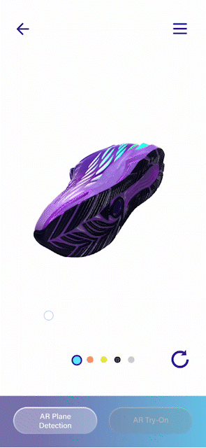
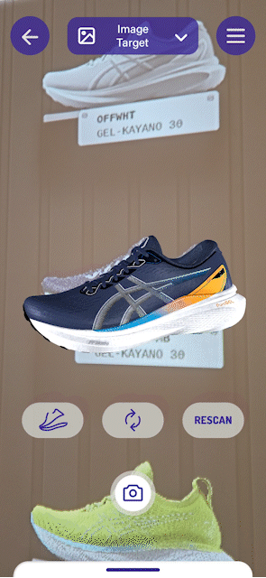

Unity / AR / R&D Prototype
Enterprise AR Solutions (R&D / PoC)
An enterprise AR proof-of-concept project exploring image recognition, physical object tracking, real-time 3D visualization, and interactive footwear presentation workflows.
Project Film
Project Impact
This AR solution concept was developed for B2B exhibition use, aiming to replace the production and transportation of physical sample shoes through AR technology while supporting the brand's digital transformation and ESG goals. I was responsible for leading the core AR interactive prototype development and technical validation, providing a solid foundation for future productization by the team.
Challenge & Execution
Core interactive prototype development
I independently developed the AR functional prototype. By combining Unity, Vuforia Engine, and Snap AR, the project implemented core interaction mechanisms including image recognition, physical object tracking, model dynamic decomposition, material switching, and foot tracking try-on tests.
High-fidelity real-time rendering optimization
I optimized the project for mobile devices, processing high-resolution 3D scan and printed mesh assets, calibrating PBR materials and lighting, and ensuring the model maintained a high level of physical realism and smooth interaction within the AR environment.
Cross-functional technical integration
The core functional prototype and underlying logic were handed off to the interaction design team for final UI refinement and system integration.
Prototype Demo
A selection of AR interaction prototypes, mobile demo tests, object tracking workflows, and real-time footwear visualization experiments developed for enterprise R&D validation.






Corporate IP Character Revamp
3D Character / AI Workflow
→